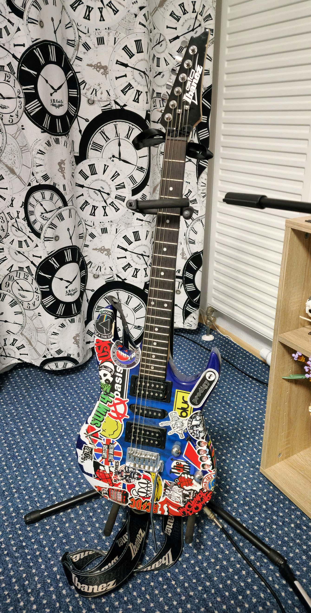
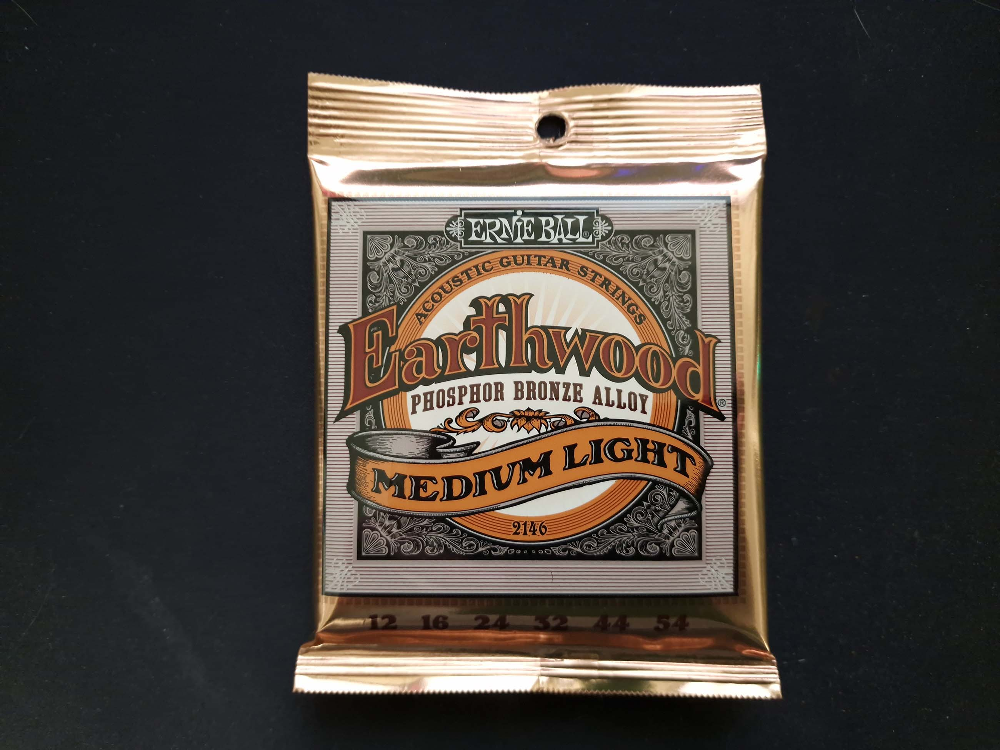
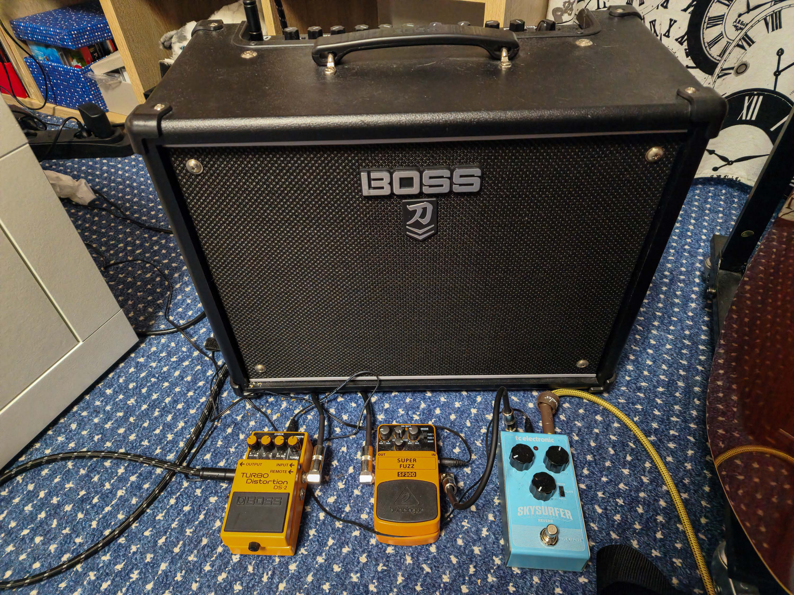

Das hier ist meine elektrische Gitarre! :)
Meine Eltern haben es mir für meinen 16ten Geburtstag gekauft. Seit dem spiele ich es fast jeden Tag.
Ich habe darauf Sticker geklebt mit Bands die ich früher gehört habe.
Am Ende der Gitarrenhals habe ich eine schwarze Fliege gebunden.
Das Modell ist ein Ibanez GRX70QA-TBB GIO und der Körper ist ein Superstrat.
Die Saiten die ich am meistens benutze sind Ernie Ball .010.
Die Zahlen von 10 bis 46 auf der Packung representiert die dicke der Seiten.
10 hier bedeutet das die dünnste Saite nur .010 Zoll dick ist und 46 dass die dickste Saite .046 Zoll dick ist.
Es gibt verschiedene Arten von Saiten, wir die hier:
Diese Seiten sind 9er und etwas dünner als die anderen. Die benutze ich für meine andere E-Gitarre.
Einige Gitarren verwenden dünnere Saiten, weil der Hals keine dickeren tragen kann.

Natürlich verwenden auch Akustikgitarren andere Saiten. Sie sind normalerweise dicker, um einen tieferen und lauteren Klang zu erzeugen.

Das ist meinen Gitarrenverstärker, ein 50 Watt Roland Boss Katana, und es ist ein Transistorverstärker.
Ich habe mich für diesen entschieden, weil ich schon einmal Roland-Verstärker gehört habe und ich den Sound absolut geliebt habe.
Ein wirklich cooles Feature, das ich daran mag, ist, dass ich es auch über ein USB-Kabel an meinen Computer anschließen und viele Soundeffekte von ihrer Website herunterladen kann.
Das finde ich gut, denn Boss Effektpedale sind echt klasse, aber auch nicht ganz so günstig.